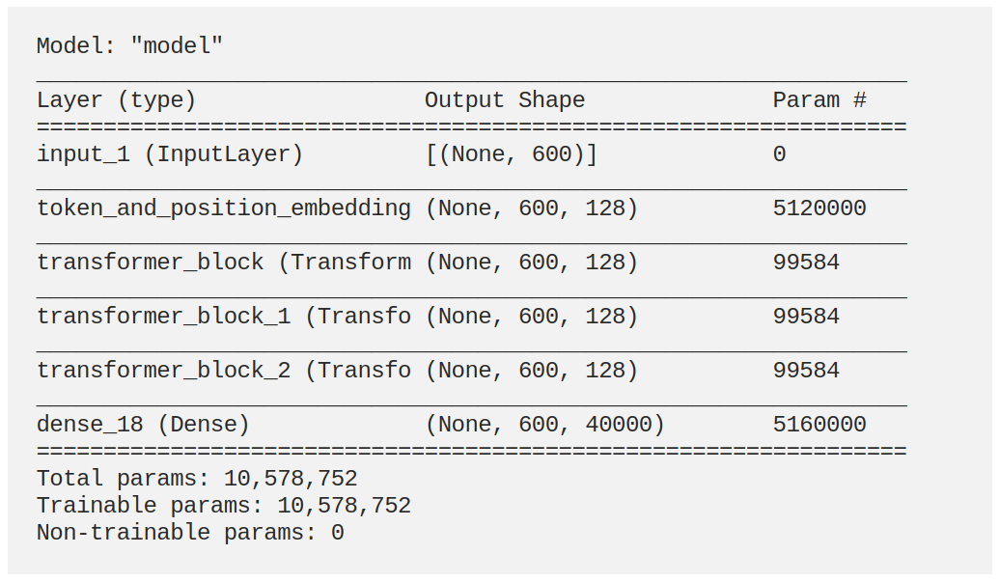

The project explored the use of State-of-the-art Natural Language Processing (NLP) model Generative Pretrain Transformer (GPT) for a music prediction task. As the structure between musical notes in a song and text in a paragraph are fairly similar, we were able to adapt a simple GPT network to create a deep learning model to carry out sequence to sequence prediction task for Jazz.

Model structure
Our model consists of 3 GPT blocks. It was trained on a relatively small Jazz midi dataset of 200 songs taken from Doug McKenzie Jazz Piano The following are a few inference samples from our best performing models (the first 5 or 10 seconds are the seed):
10 Second seed
5 Second seed
5 Second seed
As a demo, we also built and deploy a web app that generate endless Jazz music from user's input. The app was deployed using Google Cloud App Engine where we hosts both our React WebApp and Python Flask inference server. The demo can be found here: Jazz Generation Web App
This project was done for the 50.038 Computational Data Science course in a group of 4. For a more indepth look into the project, check out my Medium article here: Jazz music generation using GPT
Jazz Generation Web App demo (I know it's ridiculous, but the video doesn't have sound, sorry!!)